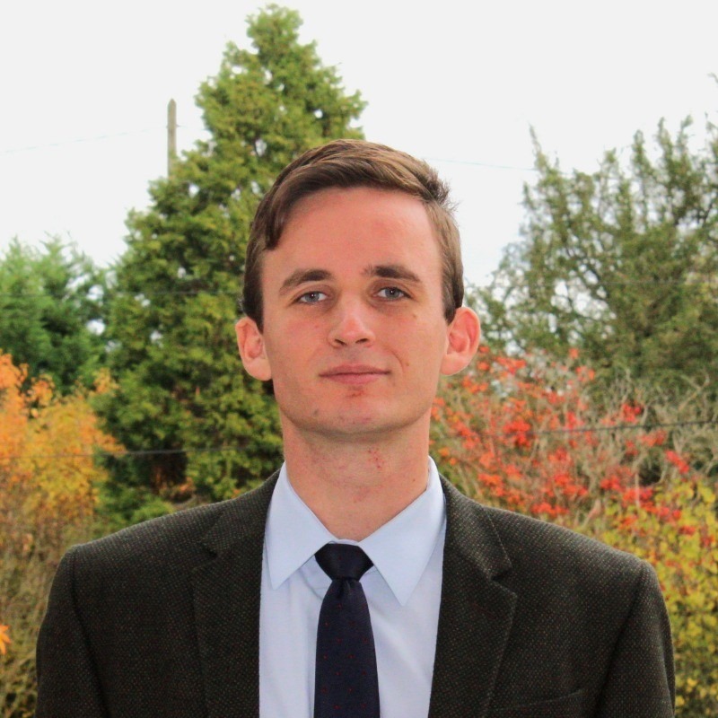
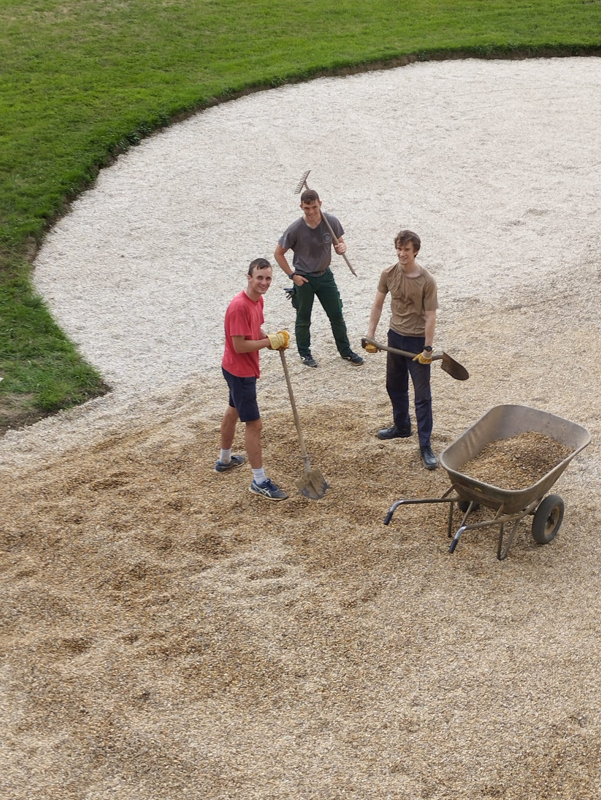
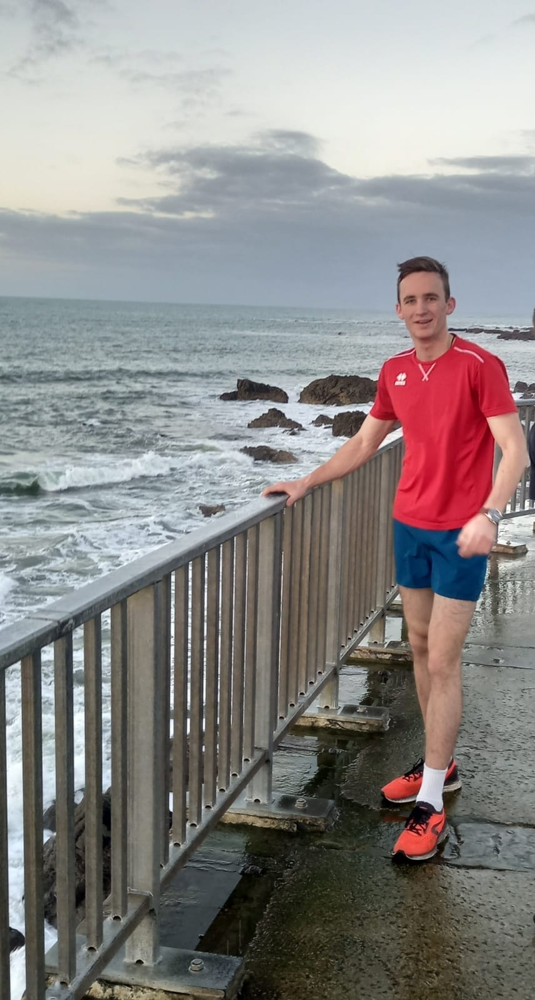
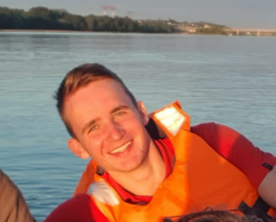

Antoine Chaptal
Engineering student in networks and telecommunications at ENSEEIHT, Toulouse INP. I like projects carried through from start to finish: design, code, test, document, and do it as a team.

- School
- ENSEEIHT, Toulouse INP
- Track
- Telecommunications, Year 2
- Looking for
- A 3-month internship in networking, from June 2027
About
After a childhood in Brussels and three years of preparatory classes in Le Mans and Tours, I joined ENSEEIHT in 2025, in the telecommunications track. My technical work focuses on networks: addressing, routing, services.
Outside school, I lead a scout troop and serve as an operational reservist in the 1st Parachute Chasseur Regiment (1er RCP).
Elevator pitchTwo minutes: my path, projects, commitments and mobility plansEducation and projects
| Period | Education |
|---|---|
| 2025 – 2028 | Toulouse INP – ENSEEIHT, master's-level engineering degree in computer science and telecommunications, telecommunications track. Networks and protocols (TCP/IP), Unix systems, routing, signal processing, object-oriented programming. Managership option: agile project management (Scrum), leadership. |
| 2022 – 2025 | CPGE PCSI / PSI*, Le Mans and Tours: intensive preparatory classes for the French engineering schools. Mathematics, physics, engineering sciences, algorithms (Python, SQL). |
Main project: an IP router with a cache, in Ada
Assign the right route to each packet from a routing table, then add a route cache, as a tree or a linked list, with three replacement policies: FIFO, LRU and LFU.
My role. Parsing the routing table and the packets, the linked-list cache scenario, the types module, and part of the report.
What I took from it. The discipline of typing and generics in Ada, and teamwork: splitting the work and assembling modules written by others.
Other projects
| May 2026 | ArchiDu7, a logic circuit simulator — team of 9, using Scrum. A JavaFX application that reads SHDL scripts and simulates the circuit. I built the text editor, the menu structure and the toolbar. |
| 2026 | Network infrastructure for an ISP — VLSM/CIDR addressing, RIP/OSPF routing, NAT gateways, Web and DNS servers, traffic analysis with Wireshark. |
| 2026 | Unix mini-shell in C — processes (fork, exec), pipes, redirections, memory checks with Valgrind. |
| January 2026 | Shortest path on a grid — in pairs, in C: lowest-cost path on an elevation grid, modular code, unit tests. |
| 2024 – 2025 | Research project: is the Kort nozzle still a good fit? — theory, a test bench with a Pitot tube, CFD simulation compared with measurements: the outlet speed is higher with the nozzle. |
Competitions and societies: Thales BattleDev (October 2025), ENSEEIHT CTF, computer science society, cybersecurity society.
International mobility
- Brussels: a childhood in a European, multicultural environment.
- Germany, Austria, Italy: several stays.
- Camino del Norte: two sections of the Way of Saint James, on foot, over the past two years.
| Language | Level |
|---|---|
| French | Native |
| English | B2, fluent |
| Spanish | Basic |
17-week mobility (semester 9) in preparation: see the mobility projects in section 06.
Sustainability and civic engagement
| Since 2025 | Reservist, 1er RCP — officer-track military preparation (PMS) in 2021-2022, initial military training in July 2026: endurance, discipline, hardiness, team cohesion. |
| Since 2025 | Scout troop leader — I lead a troop of about twelve young people aged 12 to 17, and handle logistics, supplies and budget for outings and camps. |
| Summers 2024 and 2025 | Restoring the Blossac manor — volunteer work on a manor in Brittany badly hit by floods. |
| At ENSEEIHT | Climate Fresk, and a role in the play "King Kong", a project against sexual and gender-based violence in the student community. |

Sport and activities
| Sport | Running, road cycling, canoeing |
| Music | Trumpet, harmonica |
| Other | Gardening, pastry |


Career project
I am looking for a 3-month technical internship from June 2027, in networks and systems. My projects, from the Ada router to the ISP infrastructure, led me to this field.
CV in English and French, LinkedIn profile, elevator pitch in section 01.
Three role models
In progress: I am arranging conversations with ENSEEIHT alumni. Each profile will be presented here: background, missions, key skills, advice received, and what I take from it.
Three mobility projects
| Project 1 | Academic exchange in Ireland |
| Project 2 | Internship in a Nordic country, Sweden or Finland |
| Project 3 | To be defined, in line with the role models |
Work experience
| 2026 | Seasonal work in the vineyards |
| Summers 2021 to 2023 | Gardener: maintaining private gardens |
| July 2020 | Farm worker, seasonal |
Degree requirements
| Requirement | Status |
|---|---|
| English B2+ (semester 9) | Current level: B2 |
| 17-week mobility (semester 9) | In preparation |
| Civic engagement, 40 h (semester 9) | Scouting, reserve, Blossac |
| Internships (semesters 6 and 8) | 3-month internship sought for June 2027 |